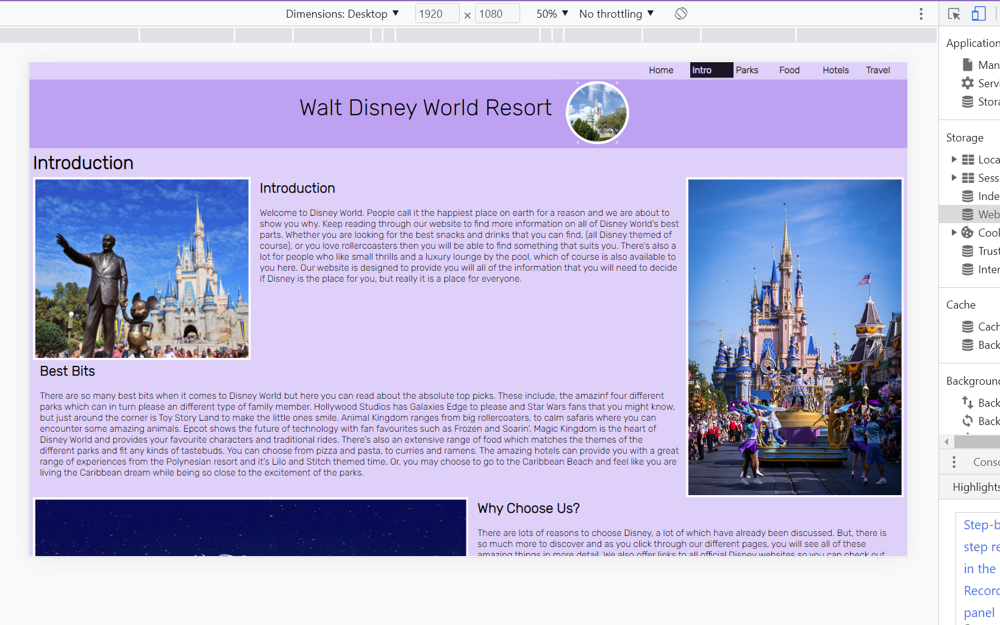
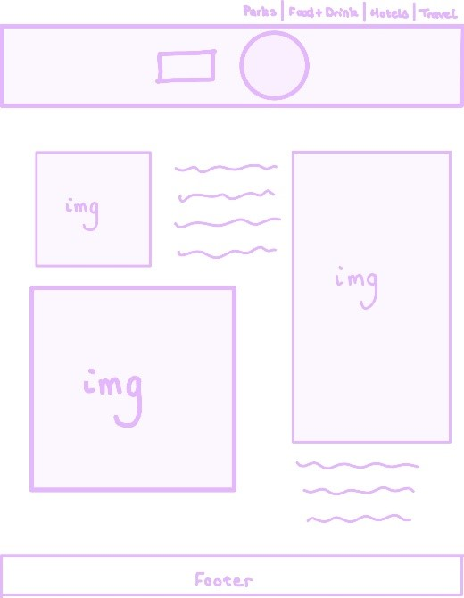
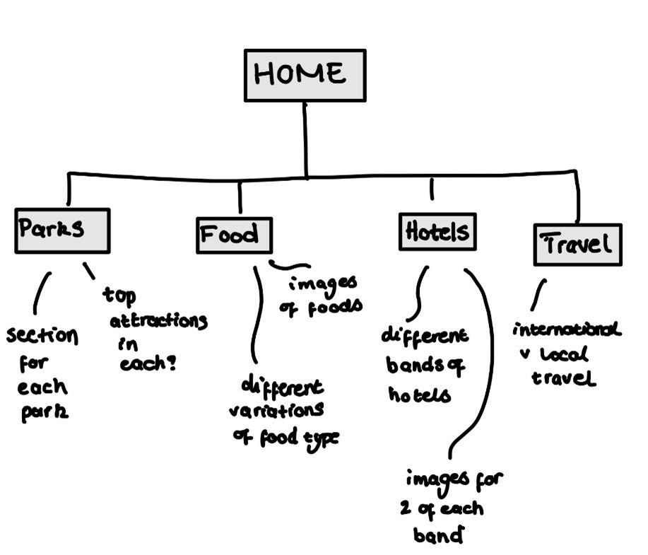

My first try at making a website from scratch was during the beginning of second year. Here we were tasked to create an advertising website using just HTML and CSS as this is all we had learnt so far. This meant that the website is quite basic in function, but it still gave me an opportunity to put the skills around layout and basic web design into practice.


This website mainly consisted of using the responsive grid layout to keep everything in the correct place within the website. But, before I started to create the layout it was important to work on the information architecture and site map, according to Dan Brown's 8 Principles (Brown,2010). Using these principles I was able to create a navigation system and flow to the website that was most appropriate for it's purpose. We learnt the importance of ideas like the principle of front doors, meaning that pages need to be accessible from all other pages, in making a website flow and function properly. To ensure I incorporated this I used sticky positioning on my navigation bar
The main technical part of this website was the responsive grid. Using CSS I created a grid layout using commands such as col-md-4 to make a column, and the same for rows. These grids were created for each of the different pages and then I used media queries to make the grids responsive to different screen sizes. This project was a great first step in my web coding and also allowed me to develop my design skills further again using sketches, colour schemes and layouts which I felt were best for that website.
